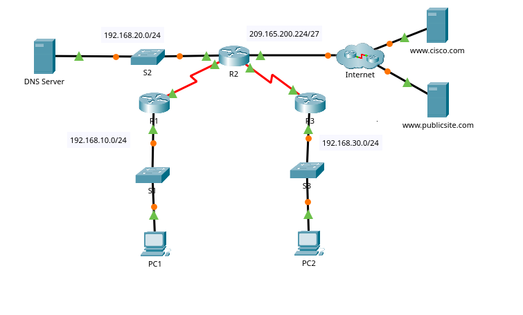

Aprenda a implementar um servidor DHCP centralizado, configurar retransmissão entre filiais e tornar seu roteador um cliente DHCP — tudo em um único laboratório prático.
Imagine que você é o administrador de rede de uma empresa com três filiais:
Seu desafio é fazer com que todos os computadores recebam IP automaticamente, mesmo que o servidor DHCP esteja apenas na matriz. É como ter um "entregador de IPs" que viaja entre as filiais para entregar endereços!
Consulte esta tabela durante toda a configuração para garantir a consistência dos endereços.
| Dispositivo | Interface | Endereço IPv4 | Máscara | Gateway |
|---|---|---|---|---|
| R1 | G0/0 | 192.168.10.1 | /24 | N/D |
| R1 | S0/0/0 | 10.1.1.1 | /30 | N/D |
| R2 | G0/0 | 192.168.20.1 | /24 | N/D |
| R2 | G0/1 | DHCP | DHCP | DHCP |
| R2 | S0/0/0 | 10.1.1.2 | /30 | N/D |
| R2 | S0/0/1 | 10.2.2.2 | /30 | N/D |
| R3 | G0/0 | 192.168.30.1 | /24 | N/D |
| R3 | S0/0/1 | 10.2.2.1 | /30 | N/D |
| PC1 | NIC | DHCP | DHCP | DHCP |
| PC2 | NIC | DHCP | DHCP | DHCP |
| DNS Server | NIC | 192.168.20.254 | /24 | 192.168.20.1 |
Topologia do Laboratório:

R1 (Filial Admin) ↔ R2 (Matriz) ↔ R3 (Filial Produção) — PCs e Servidor DNS
🎓 Por que fazer isso? Para evitar que dois dispositivos tenham o mesmo IP — seria como ter duas casas com o mesmo número! Precisamos reservar os IPs dos gateways e de outros equipamentos estáticos.
Acesse o R2:
enable configure terminal
Comando 1: Reservar IPs da rede 192.168.10.0/24 (Filial Administrativa)
R2(config)# ip dhcp excluded-address 192.168.10.1 192.168.10.10
ip dhcp excluded-address → Diz ao DHCP quais IPs NÃO podem ser entregues192.168.10.1 192.168.10.10 → Bloqueia do IP .1 até .10Comando 2: Reservar IPs da rede 192.168.30.0/24 (Filial de Produção)
R2(config)# ip dhcp excluded-address 192.168.30.1 192.168.30.10
🎓 O que vamos fazer? Criar uma "caixa" de endereços para a Filial Administrativa. Cada computador dessa filial vai pegar um IP dessa caixa.
R2(config)# ip dhcp pool R1-LAN R2(dhcp-config)# network 192.168.10.0 255.255.255.0 R2(dhcp-config)# default-router 192.168.10.1 R2(dhcp-config)# dns-server 192.168.20.254 R2(dhcp-config)# exit
ip dhcp pool R1-LAN → Cria a "caixa" com nome R1-LANnetwork 192.168.10.0 255.255.255.0 → Define a rede disponível (de .1 até .254)default-router 192.168.10.1 → Define o "porteiro" que direciona o tráfego para foradns-server 192.168.20.254 → Define o servidor que traduz nomes em IPs🎓 O que vamos fazer? Criar uma "caixa" de endereços para a Filial de Produção.
R2(config)# ip dhcp pool R3-LAN R2(dhcp-config)# network 192.168.30.0 255.255.255.0 R2(dhcp-config)# default-router 192.168.30.1 R2(dhcp-config)# dns-server 192.168.20.254 R2(dhcp-config)# exit
🎓 Explicação Humanizada: Agora temos um problema: o servidor DHCP (R2) está na matriz, mas os computadores das filiais R1 e R3 estão em redes diferentes. Como eles vão pedir IP se estão "longe" do servidor?
É aí que entra o "agente de retransmissão" (ip helper-address). Pense como um "carteiro especial" que fica nas filiais:
Sem esse "carteiro", os pedidos de IP nunca chegariam ao servidor!
Acesse o R1:
enable configure terminal R1(config)# interface g0/0 R1(config-if)# ip helper-address 10.1.1.2
ip helper-address → Ativa o "carteiro" na interface10.1.1.2 → Endereço do servidor DHCP (interface S0/0/0 do R2)Acesse o R3:
enable configure terminal R3(config)# interface g0/0 R3(config-if)# ip helper-address 10.2.2.2
10.1.1.2 (conexão serial entre R1 e R2)10.2.2.2 (conexão serial entre R3 e R2)No PC1 (Filial Administrativa):
No PC2 (Filial de Produção):
🎓 Explicação Humanizada: Agora vamos fazer algo interessante: o próprio roteador R2 vai pedir um IP para a internet!
Imagine que sua empresa contrata um provedor de internet. O provedor te dá um cabo e diz: "conecte aqui e você vai receber um IP automaticamente". Isso é exatamente o que vamos fazer com a interface G0/1 do R2.
Por que isso é útil?
No R2:
configure terminal R2(config)# interface g0/1 R2(config-if)# ip address dhcp R2(config-if)# no shutdown R2(config-if)# exit
interface g0/1 → Entra na interface que vai para o ISPip address dhcp → Diz "me dê um IP automaticamente"no shutdown → Liga a interface (estava desligada)Verificar se recebeu o IP:
R2# show ip interface brief
No R2:
R2# show ip dhcp binding
Saída esperada:
IP address Client-ID/ Lease expiration Type
Hardware address
192.168.10.11 0002.4AA5.1470 -- Automatic
192.168.30.11 0004.9A97.2535 -- Automatic
📖 Analogia: É como olhar uma lista de hóspedes do hotel: "Quarto 101 - João Silva, Quarto 102 - Maria Santos"
Teste 1: PC1 para PC2
PC1> ping 192.168.30.11
Teste 2: PC1 para DNS Server
PC1> ping 192.168.20.254
Teste 3: PC2 para R1
PC2> ping 192.168.10.1
Teste 4: PC1 para R3
PC1> ping 192.168.30.1
Use estes comandos para verificar e diagnosticar sua configuração:
| Comando | O que faz? | Quando usar? |
|---|---|---|
show ip dhcp binding |
Lista todos os IPs entregues | Para ver quem recebeu IP |
show ip dhcp pool |
Mostra as pools configuradas | Para ver as "caixas" de IPs |
show ip interface brief |
Mostra IPs das interfaces | Para verificar IPs dos roteadores |
show running-config | section dhcp |
Mostra configurações DHCP | Para revisar o que foi configurado |
show ip route |
Mostra tabela de roteamento | Para verificar caminhos na rede |
| Problema | Causa Provável | Solução |
|---|---|---|
| PC não recebe IP | Helper-address não configurado | Verificar R1 e R3: show running-config interface g0/0 |
| R2 não recebe IP no G0/1 | Interface desligada | Verificar no shutdown |
| IP duplicado | Endereço não excluído | Verificar show ip dhcp excluded-address |
| Ping não funciona | Roteamento ausente | Configurar rotas estáticas ou protocolo de roteamento |
| Pool DHCP não funciona | Gateway errado | Verificar default-router na pool |
Use esta lista para garantir que sua configuração está 100% correta:
show ip dhcp binding mostra os PCs
Baixe a topologia oficial resolvida (.pkt) contendo todas as verificações validadas.
Baixar Arquivo .PKTA melhor maneira de aprender redes é praticando. Cada comando digitado é um passo a mais no seu conhecimento!